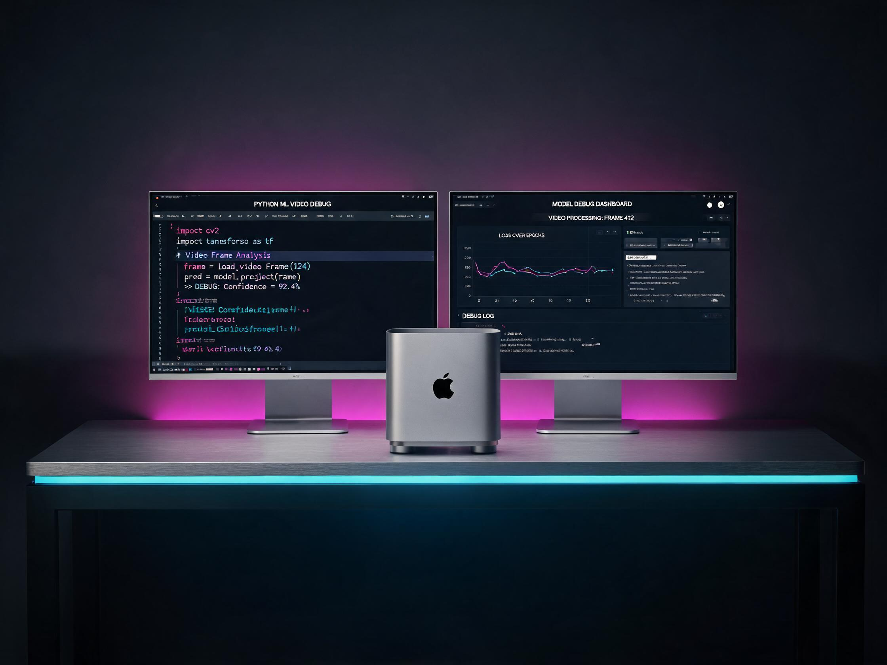
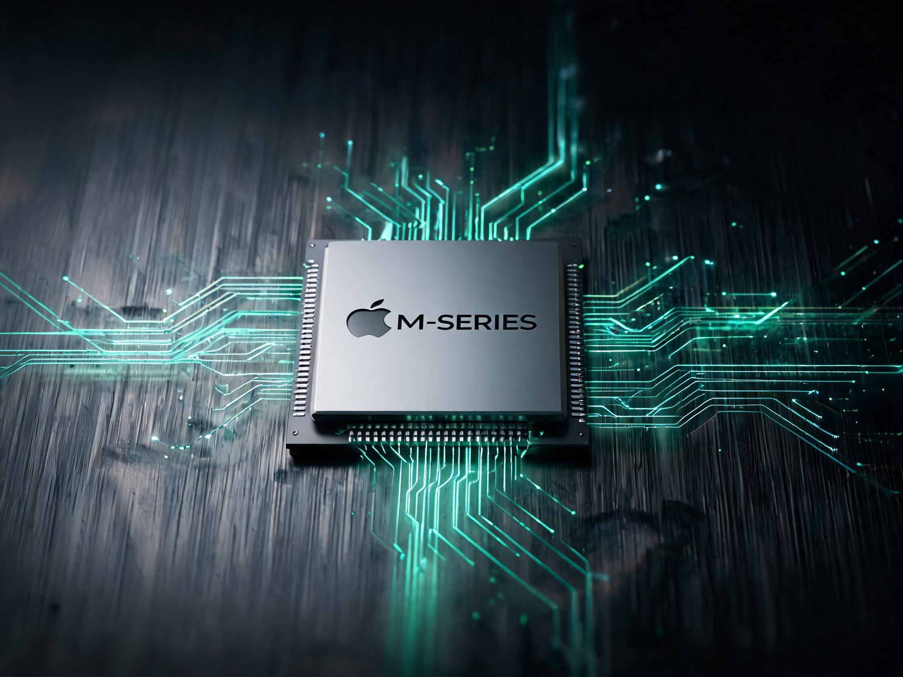
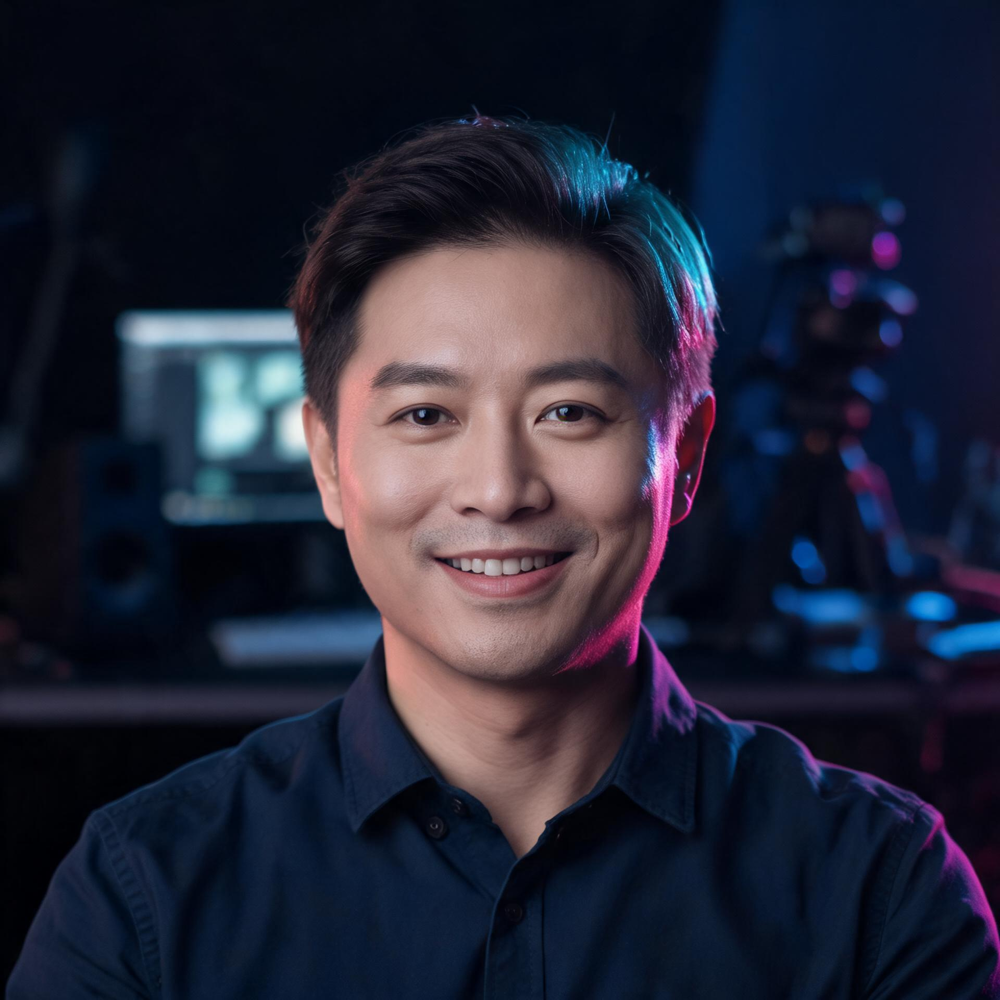

为创作者重新定义视频工具：
纯净、自主与极致工程
在当今充斥着云端订阅陷阱、隐私上传泄漏和画质二次压缩的有损时代，TokPure 坚信——你的算力应该属于你，你的创作资产绝不应离开你的 Mac。

零跨平台开销的纯正 macOS 体验

离线神经网络无痕帧级重建
你的媒体内容，留在本地硬盘
三大工程设计准则
我们拒绝在安全、效率与画质之间做任何妥协。每一行代码都经过审计，确保在封闭沙盒内完成最高负载的媒体任务。
0 Cloud Leak
零云端留存与中转
传统竞品普遍将用户链接发送至第三方服务端解析和中转下载，创作者的内容偏好与数据随时面临爬取与脱敏泄露风险。TokPure 在本地直连 TikTok 官方公开 CDN，从 URL 解析、流式切片到最终组装均在你的 Mac 本地沙盒闭环，零中间人转存。
Native Apple Silicon
原生 Swift & CoreML 引擎
拒绝粗制滥造的 Electron 封装方案。TokPure 深度绑定 Apple Silicon 架构，基于 Metal 3 着色器与 Unified Memory 直接调度 Neural Engine 神经计算单元。批量清洗 100+ 条超清短视频时，MacBook 仍能保持完全静音运行与极低电池发热。
Lossless Fidelity
母带级画质与时间序列修复
传统的去水印工具通过模糊降噪或裁切破坏画面构图。TokPure 引入帧间时序注意力模型（Temporal Inpainting），借助相邻帧的连续光流场与高频纹理重构擦除区域，保留每一颗噪点颗粒与动态光影，让素材随时可用于影视后期调色。
端到端本地沙盒架构全景
从网络发起到帧级张量计算，TokPure 彻底切断外部恶意分析链路。以下为每一帧在您硬件内部流转的完整链路：
直连官方 CDN
URL 剪贴板本地解析。直发 HTTPS 请求至 ByteDance 开放 CDN 节点，可指定 SOCKS5/HTTP 本地代理解析。
隔离系统沙盒
App Sandbox 特权隔离，仅拥有用户授权目录读写权限：~/Movies/TokPure，无权扫描其他用户资产。
统一内存共享
利用 Apple Silicon Unified Memory 架构零拷贝特性，将解复用后的 H.264/HEVC 帧直接投送至统一显存池。
CoreML 神经引擎
脱机加载 45MB 精简版神经网络，仅针对浮动 LOGO 锚点区域进行帧补全，其余原始宏块 100% 直通保持原汁原味。
零日志安全输出
重封装无损 MP4 / ProRes 文件直存本地。彻底剥离所有第三方 SDK 与追踪代码，应用关闭时清空任何临时缓冲。
[OK] com.apple.security.app-sandbox active.
[INFO] Loading offline neural model weights from /Resources/InpaintV42.mlmodelc (CRC32: 0x9FD84C)
[NET] Socket connect direct: cdn-fastly.tiktokcdn.com:443 (Direct IP route, zero proxy detour)
[DISPATCH] Dispatching 120 frames to Apple Neural Engine via MPSGraph
[COMPLETED] Local transcode finished in 1.42s with 0 telemetry packets sent to outside internet.
源自剪辑室痛点的极客项目
TokPure 起源于 2022 年底。当时我们的创始成员正为一部跨平台短视频纪录片整理数百小时的素材档案。市面上充斥着充值套路网站、充满恶意重定向的广告页面，以及需要把高隐私视频上传到陌生云服务器处理的“AI 去水印工具”。
作为狂热的 macOS 开发者与音视频极客，我们认定现代 Apple Silicon 的神经引擎算力完全过剩——我们根本不需要云端服务器来擦除这枚小小的水印！于是我们在 GitHub 上敲下了第一行 Swift 代码，诞生了专为桌面创作者而生的无损纯净下载器。
开放社区与生态奉献
代码开源、白皮书审计与开源回馈计划
我们相信工具的真正尊严在于透明。TokPure 的所有网络通讯代码、CoreML 模型权重哈希值均公开可查，欢迎社区安全专家随时审查。

Alex Chen & 核心工程团队
TokPure 首席架构师 • 前大厂高级音视频多媒体专家
“做一款不偷存用户隐私、不劫持剪贴板数据、不需要月月续费的扎实好软件。这就是我们每天写代码的初衷。”
无论你是独立创作者还是安全研究员
TokPure 始终保持开放透明。如果你发现了 TikTok 协议变动导致解析异常、有任何母带级去水印算法优化思路，或者希望为团队提交安全漏洞报告，请随时与我们对话。
安全漏洞赏金计划
发现 TokPure 存在任何违背 “0 Cloud Leak” 原则的外部数据泄漏，即可获得最高 $2,500 赏金。
创作者媒体合作
为摄影工作室、短剧导演团队及数字档案管理人员提供定制化批量导出解决方案与团队授权。